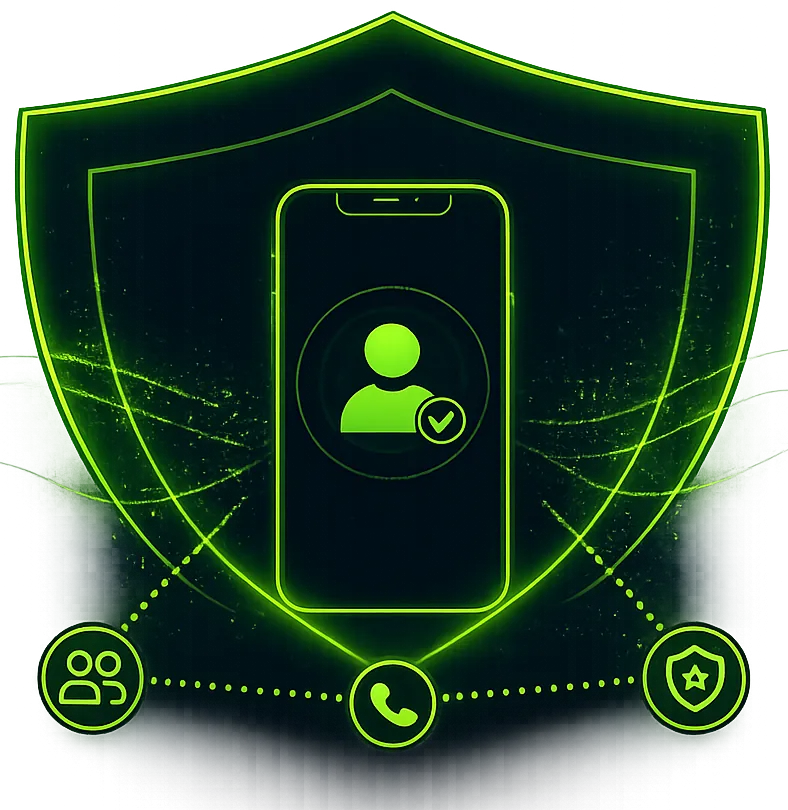
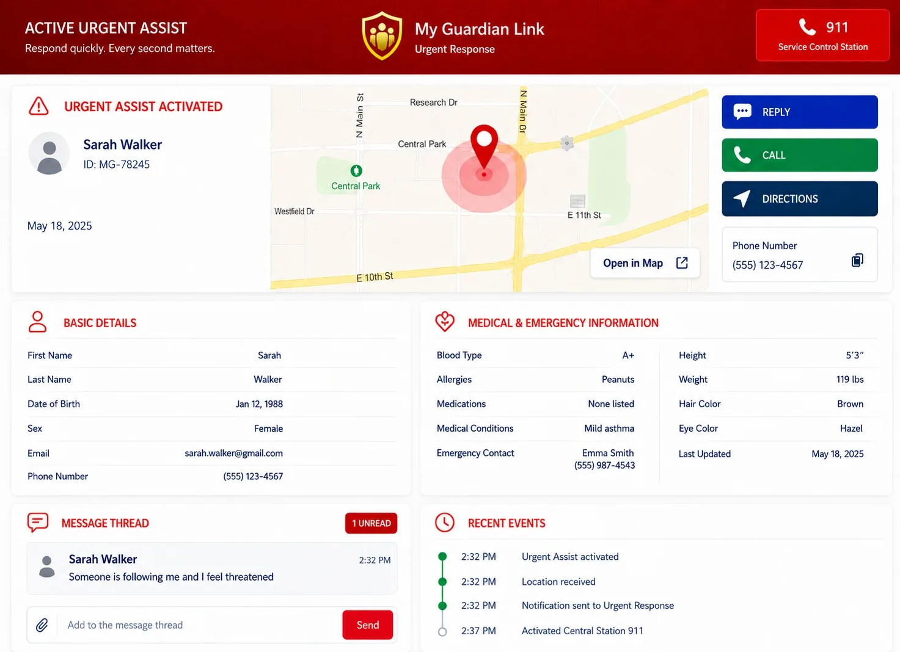
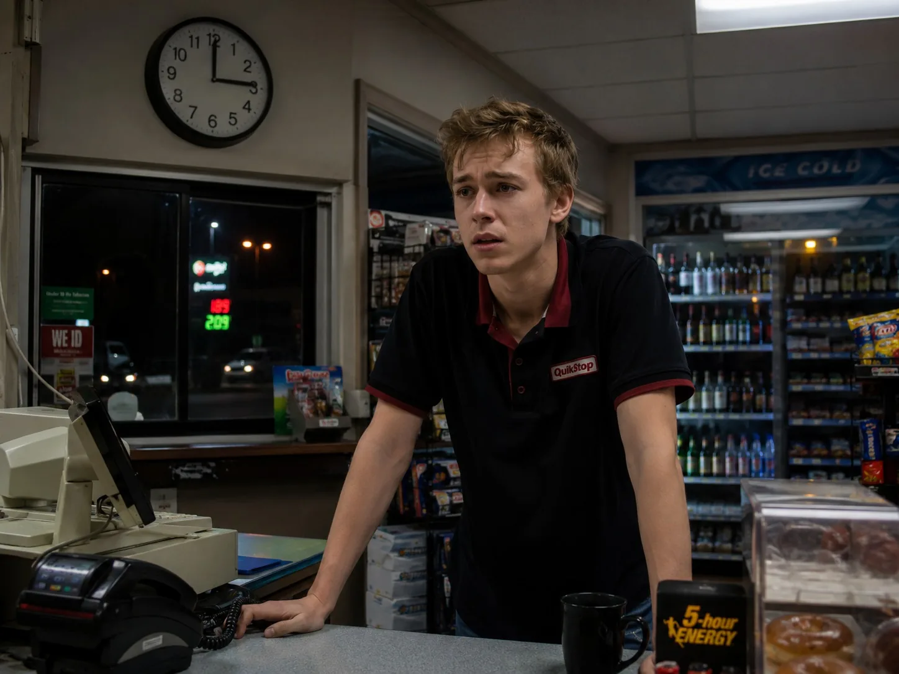
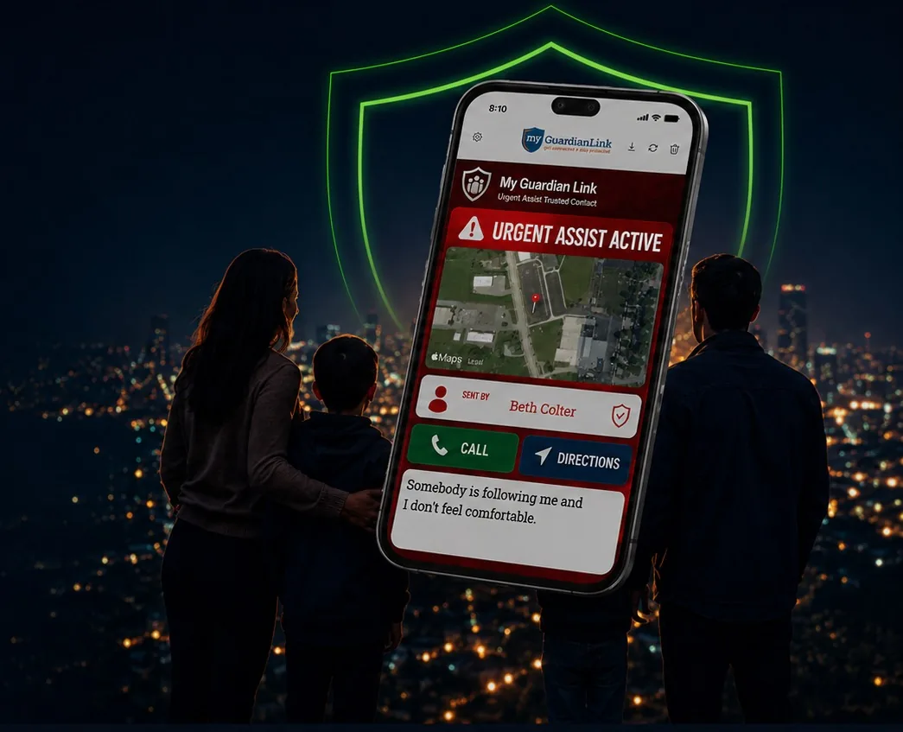

Silent Activation.
Discreet and fast when it matters most. Tap the app, use voice command, smartwatch, earbuds, or silent activation.
Your Personal Protection link
*Strengthens, Complements & Supports 911 — Does Not Replace 911.
Activate an urgent alert, share your live location, notify trusted contacts, and connect with a live response coordinator in seconds.
911 was built for voice calls.
The 5-Step Flow
A simple step-by-step view of how My Guardian Link helps move information quickly when urgent help is needed.
Tap the app, use voice command, smartwatch, earbuds, or silent activation.
Verified identity, phone, GPS location, emergency type, and timestamp are delivered instantly.
The people you choose receive immediate alerts with verified details.
A human response coordinator reviews and takes action on your signal and guides the response.
When needed, verified details will be shared with 911 so response can begin faster.

Why It Is Different
One silent urgent signal sends your identity, GPS location, and incident details to your trusted contacts and a trained personal coordinator.
Discreet and fast when it matters most. Tap the app, use voice command, smartwatch, earbuds, or silent activation.
Instant alerts sent to the people you trust most. The people you choose receive immediate alerts with verified details.
A real response coordinator reviews and acts when needed — and can escalate to 911 immediately.
Every signal is recorded for clarity and peace of mind. Type of emergency, time, and any details you provide.

Built to support faster, more coordinated response when every second matters.
Emergencies don’t follow a script.
My Guardian Link delivers silent protection, precise location, and real people who can act—fast.
See Something Say Something
Report suspicious activity or an urgent concern. My Guardian Link shares the information with the appropriate people so action can begin sooner.
Notice suspicious activity or an urgent concern.
Send information quickly and anonymously.
We share details with the right people to help start the response.
Working together to keep our neighborhoods safer.
Your identity is protected. Reports are confidential and never shared publicly.
Who It Protects

From every day uneasiness to urgent danger, protection should move with you.
Roadsite assistance
Fast, reliable roadside assistance, 24/7. Wherever you are, we are just one tap away.

Life is unpredictable. My gaurdian link is here to help protect you and the people you care about – anytime, anywhere.